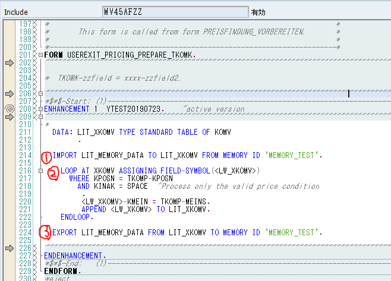
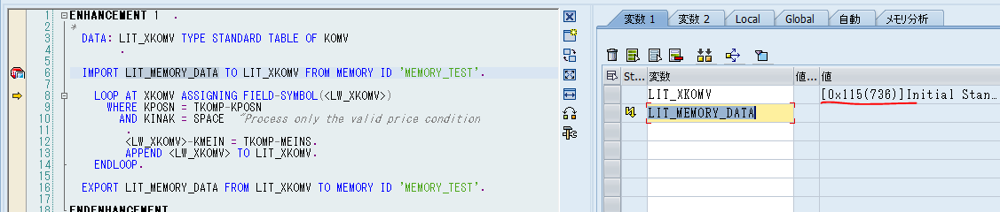
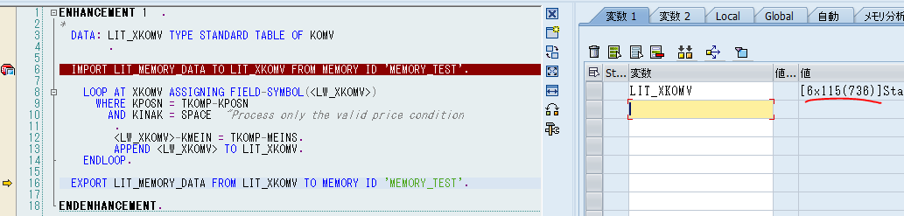
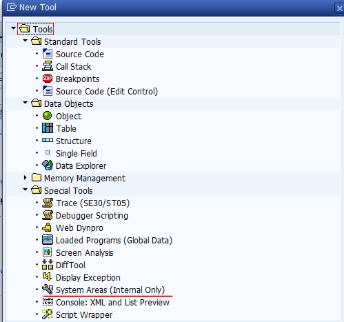
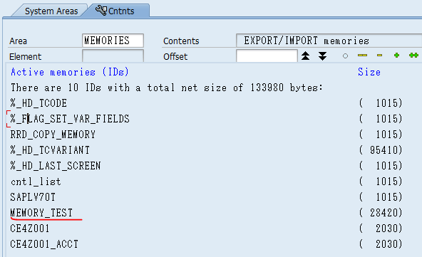
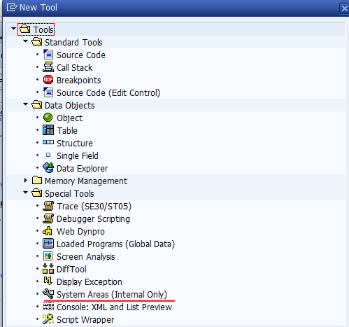
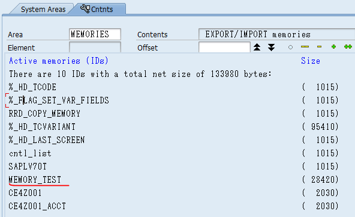

Using ABAP memory to pass on your own internal table in exits.
Exits comes handy when the standard functions that don't quite provide what we require. They are the little loop holes for us to implement our own codes inside the standard SAP programs. You can use the global variables and intenal tables and by changing them to suit your needs. While the global vaiables and tables are there for you, you are not able to create your own global values. For example, you want to store the number of times of changes and increment the value everytime the changes occur but no such variable exists (Unless you take a least used variable and mark the incremented number there, which is not recomennded as it is still SAP standard variable. You never know what it is used for later in the standard code). I went through painstaking process and found out that you can use ABAP memory to pass your necessary values. It's like summoning a vortex and passing the value, whenever needed summon the vortex again to retreat it. In this section, I will use user exit "USEREXIT_PRICING_PREPARE_TKOMP" in program MV45AFZZ. It's triggered when price is added/changed in sales order.
To break down the ① statement, LIT_MEMORY_DATA is the name of data(could be anything) called from memory ID MEMORY_TEST(could be anything as well) and LIT_XKOMV is where the called data is transfered to. On the first call of this exit, the imported data is empty. ② is where your custom logic goes in. My logic is to set BUOM(base unit of measure) to the pricing UOM(unit of measure). Finally we come to ③ where exports the internal table with which ② has already processed.
Let's look at it in detail with debugger by setting a breakpoint on line of import statement. When the exit is called the first time, we see that LIT_XKOMV is empty. Also we see that LIT_MEMORY_DATA is not variable and merely a label for the data called from the memory.
After ② is proceed, LIT_XKOMV stores 6 records, meaning ② has process 6 price conditions. We proceed ③ with nothing really happning. Now let's change something in the price condition to trigger the exit again. When we step pass the import statement, LIT_XKOMV stores the same 6 records exported the last time. For exporting the second time, LIT_XKOMV will be appended so whatever ② will process will be added up to the first 6 records. As a rsult, LIT_XKOMV works just as a global variable does, which will come in handy working with exits.
Last but not least, let's check the memory ID MEMORY_TEST in debugger. CLick "replace tool" or "New Tool" and find "System areas(Internal only)". Click "MEMORIES" in system areas tab and our ID "MEMORY_TEST" is there.
 


